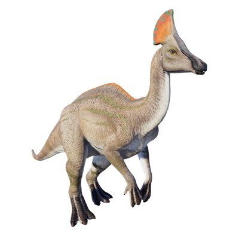

Useful Website
The herbivorous Olorotitan is a genus of hadrosaurid with a distinctive duck-billed snout and a striking crest on top of its head, and its name – which translates to ‘titanic swan’ – is a reference to its long neck. It was one of the last dinosaurs to exist in the wild, dying out in the extinction event at the end of the Cretaceous period, and could grow up to 10m in length
